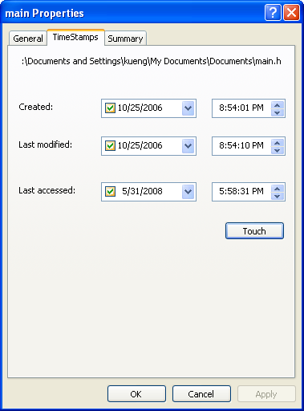

SKTimeStamp
$ADSENSE_TOP$SKTimeStamp is a very simple shell extension which adds a new page to the Explorer properties dialog. On that new page, you can change the file/folder dates and times.
Go to the download page.


SKTimeStamp is a very simple shell extension which adds a new page to the Explorer properties dialog. On that new page, you can change the file/folder dates and times.
Go to the download page.